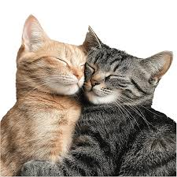
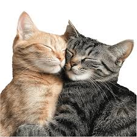

La razón por la que me gustas
Me gustas demasiado porque eres alguien muy interesante muy divertida aunque a veces no congeniamos eres alguien demasiado linda de sentimientos.
Yo solo quiero demostrarte que mi interés es de verdad, es para amarte. Sé que no estás lista para amar o quizá para que te amen, pero espero y me des la oportunidad de demostrarte que sí sé amar de verdad.
Quiero demostrarte que, a pesar de que sea tan difícil tener una relación, siempre habrá algo bueno o algo malo en la relación. No se trata de ganar, sino de compartir, y créeme que perdería todo lo poco que tengo solo para ganar tus ojitos tan bonitos que tienes.
Eres una chica maravillosa. Sé que no soy alguien muy expresivo, pero de las pocas veces que te he visto me he enamorado más de ti. Solo quiero que te tomes tu tiempo y decidas si quieres darme una oportunidad a mí.
Y si no, espero que alguien sí te haga feliz de verdad, aunque no sea a mi lado. Espero que seas feliz con alguien que te ame y te cuide de verdad, porque eso es lo que yo haría por ti e incluso haría más. Eso es muy poco para lo que tú te mereces, niña bonita.
 
